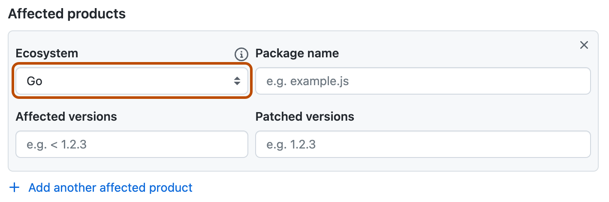
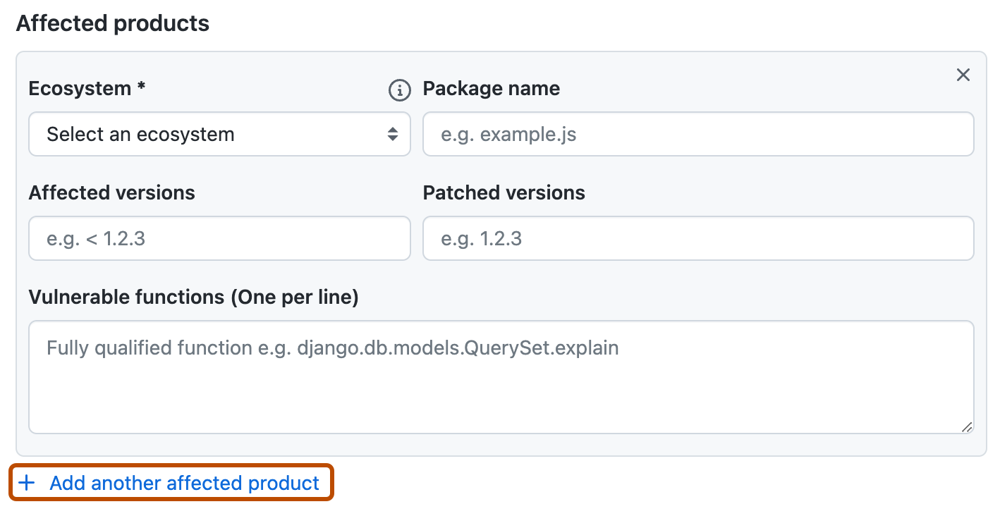

When you create or edit security advisories, the information you provide is easier for other users to understand when you specify the ecosystem, package name, and affected versions using the standard formats.
Note
If you are a security researcher, you should directly contact maintainers to ask them to create security advisories or issue CVEs on your behalf in repositories that you don't administer. However, if private vulnerability reporting is enabled for the repository, you can privately report a vulnerability yourself. For more information, see Privately reporting a security vulnerability.
Repository security advisories allow maintainers of public repositories to privately discuss and fix a security vulnerability in a project. After collaborating on a fix, repository maintainers can publish the security advisory to publicly disclose the security vulnerability to the project's community. By publishing security advisories, repository maintainers make it easier for their community to update package dependencies and research the impact of the security vulnerabilities. For more information, see About repository security advisories.
We recommend you use the syntax used in the GitHub Advisory Database, especially the version formatting, when you write a repository security advisory, or make a community contribution to a global security advisory.
If you follow the syntax for the GitHub Advisory Database, especially when you define affected versions:
You add or edit a repository advisory using the Draft security advisory form. For more information, see Creating a repository security advisory.
You suggest an improvement to an existing global advisory using the Improve security advisory form. For more information, see Editing security advisories in the GitHub Advisory Database.
You need to assign the advisory to one of our supported ecosystems using the Ecosystem field. For more information about the ecosystems we support, see Browsing security advisories in the GitHub Advisory Database.

We recommend that you use the Package name field to specify which packages are affected because package information is required for "GitHub-reviewed" advisories in the GitHub Advisory Database. Package information is optional for repository-level security advisories, but including this information early simplifies the review process when you publish your security advisory.
We recommend that you use the Affected versions field to specify which versions are affected because this information is required for "GitHub-reviewed" advisories in the GitHub Advisory Database. Version information is optional for repository-level security advisories, but including this information early simplifies the review process when you publish your security advisory.
For more information about the GitHub Advisory Database, see https://github.com/github/advisory-database.
1.0.0 is a lower version than 2.0.02.0.0-a is an earlier version than 2.0.0-b.2.0.0-alpha, 2.0.0-beta, and 2.0.0-rc are earlier than 2.0.0.Fixed field because that version is smaller than the vulnerable version.>= for “greater than or equal to this version”.
> for “greater than this version”.
Warning
Although GitHub supports the use of the > operator, using this operator is not recommended because it's not supported by the OSV format.
= for “equal to this version”.
<= for “less than or equal to this version”.
< for “less than this version”.
It is important to clearly define the affected versions for an advisory. GitHub provides several options in the Affected versions field for you to specify vulnerable version ranges.
For examples showing how affected versions are defined in some existing advisories, see Examples.
A valid affected version string consists of one of the following:
A lower bound operator sequence.
An upper bound operator sequence.
Both an upper and lower bound operator sequence. The lower bound must come first, followed by a comma and a single space, then the upper bound.
A specific version sequence using the equality (=) operator.
Each operator sequence must be specified as the operator, a single space, and then the version. For more information about valid operators, see Supported operators above.
The version must begin with a number followed by any number of numbers, letters, dots, dashes, or underscores (anything other than a space or comma). For more information about version formatting, see Version syntax above.
Note
Affected version strings cannot contain leading or trailing spaces.
Upper-bound operators can be inclusive or exclusive, i.e. <= or <, respectively.
Lower-bound operators can be inclusive or exclusive, i.e. >= or >, respectively. However, if you publish your repository advisory, and we graduate your repository advisory into a global advisory, a different rule applies: lower-bound strings can only be inclusive, i.e. >=. The exclusive lower bound operator (>) is only allowed when the version is 0, for example > 0.
Proper use of spaces
Use a space between an operator and a version number.
Do not use a space in >= or <=.
Do not use a space between a number and a comma in >= lower bound, <= upper bound.
Use a space between a comma and the upper bound operator.
Note
The lower-bound limitation:
You cannot specify multiple affected version ranges in the same field, such as > 2.0, < 2.3, > 3.0, < 3.2.To specify more than one range, you must create a new Affected products section for each range, by clicking the + Add another affected product button.

If the affected version range includes only a single upper or lower bound:
> 0 if the lower bound is not explicitly specified.<= or <.>= 0, <= n or >= 0, < n to refer to version ranges that only have an upper bound).>= 0 in a range that only has an upper bound.>= 0 for all versions> 0 is generally not used.= n for the single affected version= will not automatically include any public or private previews, only the version specified.Avoid using the < n vulnerable version range and then saying n+1 is patched.
< n should only be used when n is not vulnerable.<= n or < n+1.Avoid using only a number when describing fixed versions with official version numbers that have letters. Say your software has two branches, linux and windows. When you release 2.0.0-linux and 2.0.0-windows, using < 2.0.0 as the vulnerable version will mark 2.0.0-linux and 2.0.0-windows as vulnerable because the version logic interprets -linux and -windows as prereleases. You will need to mark 2.0.0-linux, the earliest branch in the alphabet, as the first patched version to avoid 2.0.0-linux and 2.0.0-windows being considered vulnerable.
Etcd Gateway TLS authentication only applies to endpoints detected in DNS SRV records (GHSA-wr2v-9rpq-c35q) has two vulnerable version ranges:
< 3.3.23, which has an upper bound with no lower bound and uses the < operator.>= 3.4.0-rc.0, <= 3.4.9, which has both an upper bound and a lower bound, and uses the >= and <= operators.XWiki Platform allows XSS through XClass name in string properties (GHSA-wcg9-pgqv-xm5v) has four vulnerable version ranges:
>= 1.1.2, < 14.10.21>= 15.0-rc-1, < 15.5.5>= 15.6-rc-1, < 15.10.6= 16.0.0-rc-1Three of these VVRs include prereleases in the range of vulnerable versions. The last VVR, = 16.0.0-rc-1, shows that only 16.0.0-rc-1 is vulnerable, while the regular release that came after it, 16.0.0, isn't. The logic considers 16.0.0-rc-1 and 16.0.0 as separate versions, with 16.0.0-rc-1 being an earlier release than 16.0.0.
The patch for this vulnerability was published on Jan 24, 2024, for version 16.0.0. For more information see commit 27eca84 in the xwiki/xwiki-platform repository. The XWiki Platform Old Core page in the MVN Repository site shows that 16.0.0-rc-1 was published on Jan 22, 2024, before the fix was added to XWiki, and 16.0.0 was published on Jan 29, 2024, after the fix was committed.
Google Guava has two branches, android and jre, in its version releases. Guava vulnerable to insecure use of temporary directory (GHSA-7g45-4rm6-3mm3) and Information Disclosure in Guava (GHSA-5mg8-w23w-74h3) are advisories about vulnerabilities that affect Guava. Both advisories set 32.0.0-android as the patched version.
32.0.0 as prereleases, so if you set the patched version to 32.0.0, then both 32.0.0-android and 32.0.0-jre would be incorrectly marked as vulnerable.32.0.0-jre, then 32.0.0-android would be incorrectly marked as vulnerable.The best way to indicate that both 32.0.0-android and 32.0.0-jre are patched is to use 32.0.0-android as the patched version, and the logic will interpret everything after 32.0.0-android in the alphabet as patched.